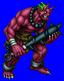
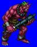
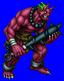
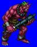

Height: Around 2.7 meters Weight: ???
Habitat: Mountain, hell Origin: Japan
Meaning: "Hidden" or "Hiding"
"Oni" is a monster from Japanese legend with the ability to fly and to transform itself into different forms. It exists with different names in Korean, Chinese, and Indian mythology. It is usually drawn with deep crimson or cyan skin with gnarled features and a large, blunt weapon. When Buddhism became popular in Japan, Oni became connected with the religion as a man-eating devil that inflicts suffering and interferes with salvation.